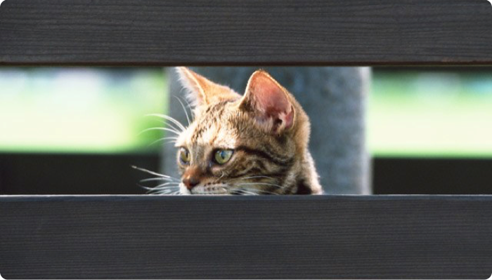
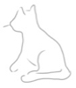
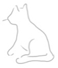

Protectora de animales PROGATS
Progat Catalunya es una asociación que defiende el gato libre, su vida en libertad y su integración en los habitats que compartimos 
Progat Catalunya es una asociación que defiende el gato libre, su vida en libertad y su integración en los habitats que compartimos 